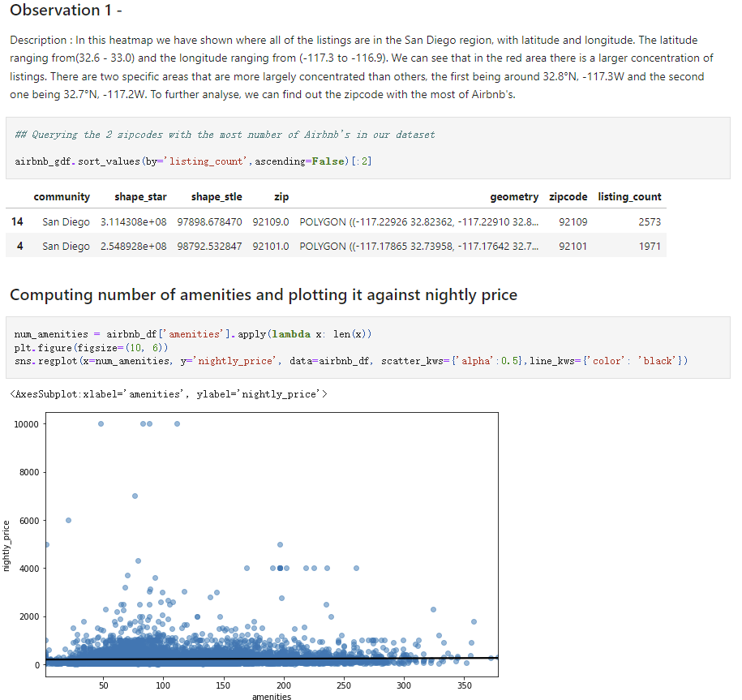
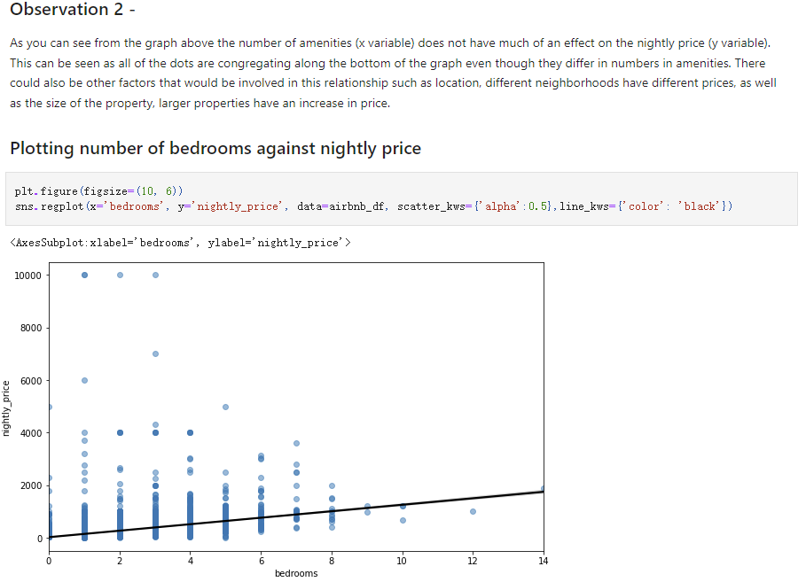
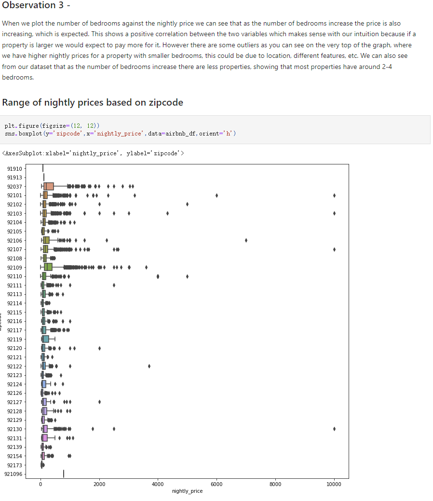
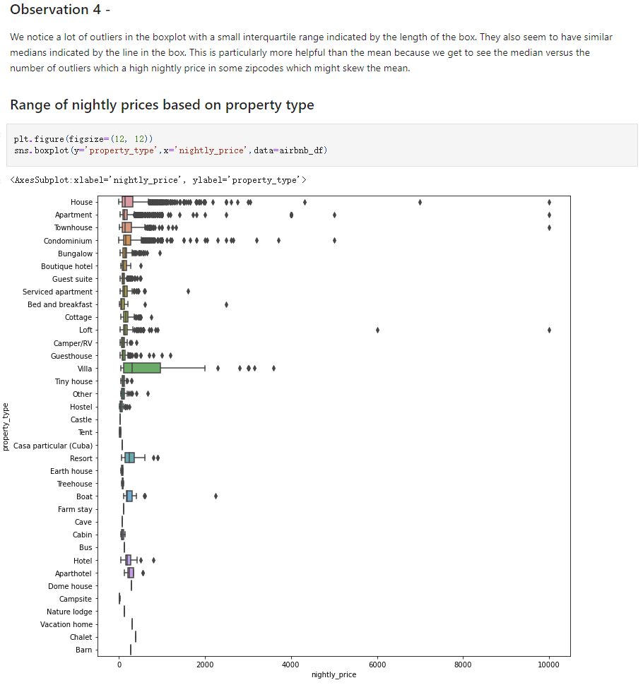
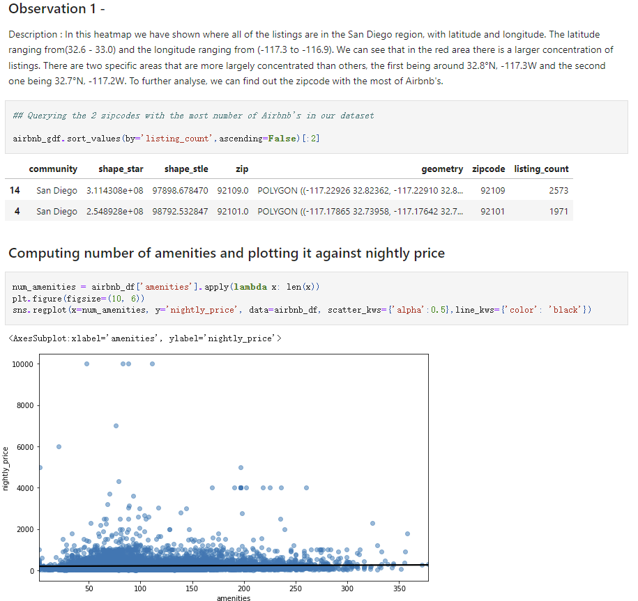
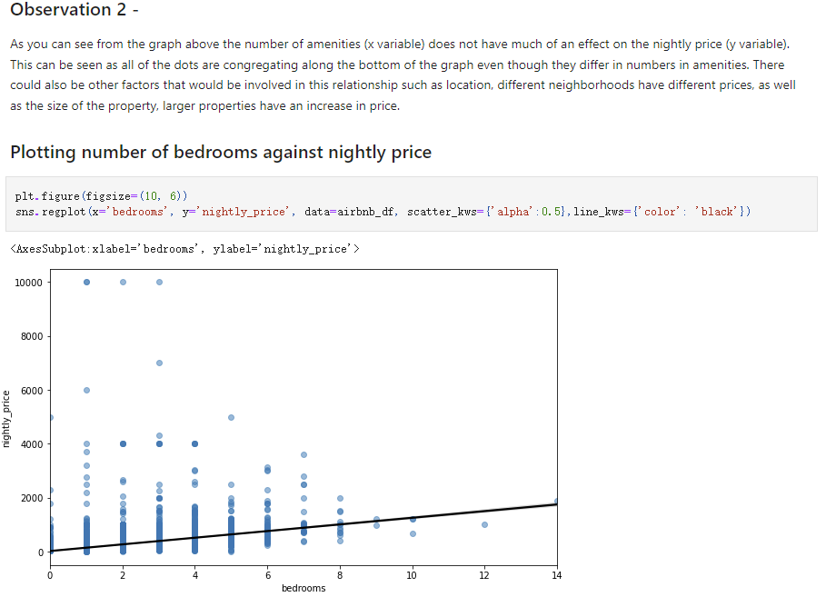
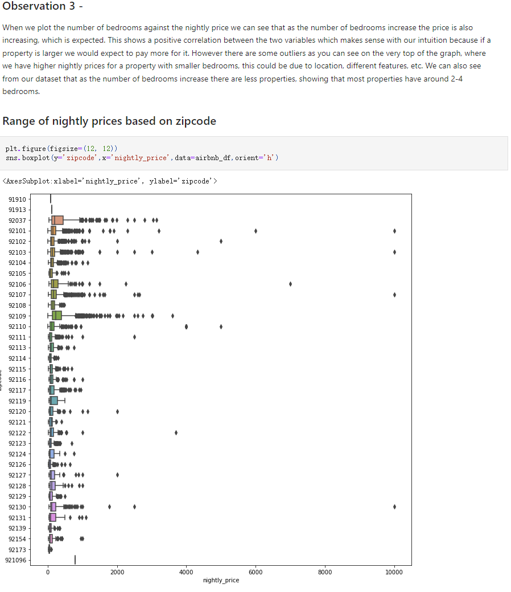
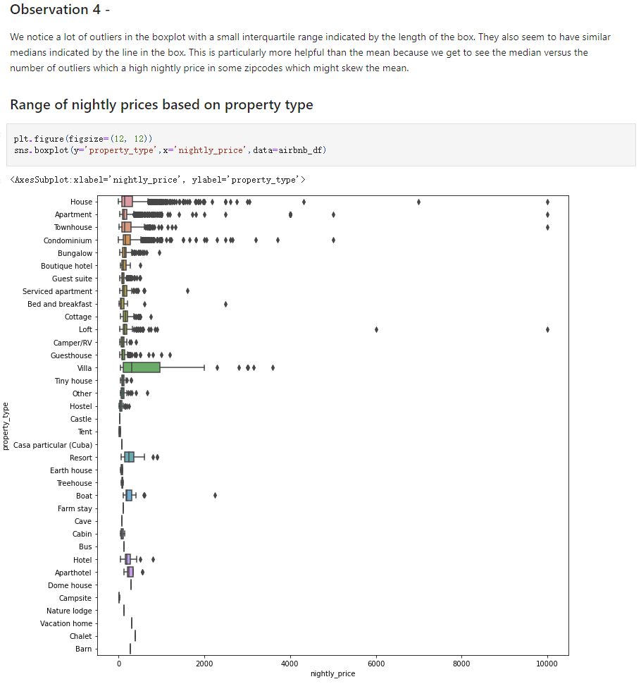

How does review description impact the Airbnb listring in San Diego?
This is why we decided to compare and contrast the different Airbnb listings in the San Diego area and determine how the description and list of amenities play into the price. This is also useful for someone starting out to do Airbnb's and wants a good description formed to extract maximum value of the property. To do this, we will also filter the property based on the number of bedrooms and bathrooms and compare each major bedroom type to the other properties and determine what keywords or amenities cause a price variation of over $1,000 per night of stay.
 







Our question was to see how the text description/wording as well as the extent of amenities of an Airbnb listing would affect the nightly rate of a property in San Diego. We hypothesized that the more detailed and comprehensive description a listing had, as well as the higher quality of amenities that it provided would lead to a higher nightly price. When conducting this study we wanted to make sure that we were using the proper dataset that had all of the variables needed in order to perform an accurate analysis. We had chosen two datasets that we believed encaptured this. One of them had given us the nightly rates of properties in San Diego, the region they are in, their text description, amenities, and their property type. The other dataset had given us information about their geographical attributes. Using these two different datasets we were able to conduct two different text analyses.